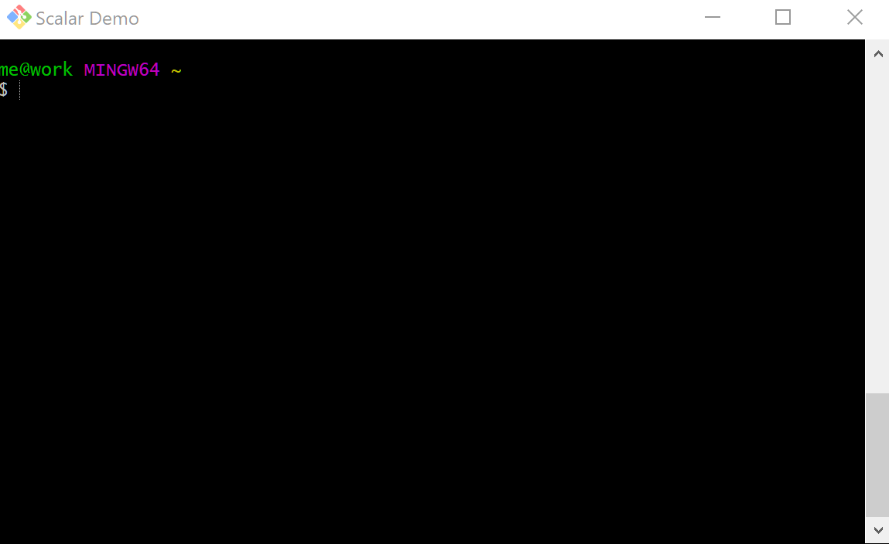
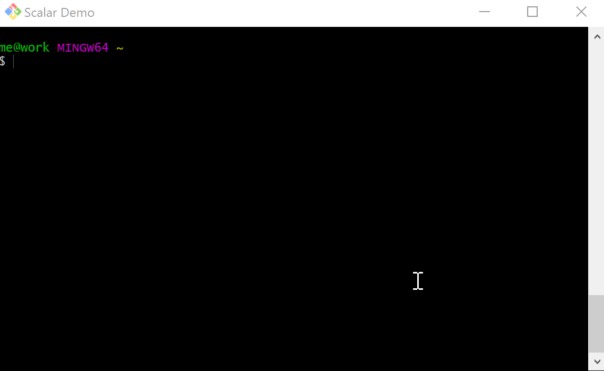

What is Scalar?
What is Scalar?

Scalar is an opinionated tool to support working with large Git projects:
- partial clone
- sparse checkout
- maintenance
What is Scalar?
| Language | files | blank | comment | code |
|---|---|---|---|---|
| C# | 314 | 5986 | 3528 | 31241 |
| Bourne Shell | 20 | 340 | 181 | 1872 |
| YAML | 19 | 156 | 18 | 967 |
| Markdown | 14 | 379 | 0 | 962 |
| MSBuild script | 16 | 79 | 19 | 339 |
| DOS Batch | 17 | 97 | 25 | 338 |
| XML | 10 | 26 | 35 | 226 |
| SVG | 2 | 2 | 2 | 149 |
| Python | 1 | 18 | 1 | 109 |
| PowerShell | 1 | 7 | 6 | 45 |
| Bourne Again Shell | 2 | 6 | 3 | 30 |
| JSON | 1 | 0 | 0 | 6 |
| SUM: | 417 | 7096 | 3818 | 36284 |
What is Scalar?
- πe2 files, πe4 lines of code
- Using .NET
- Based on learnings from VFS for Git
Scalar Demo
Hack week
Port Scalar to C
Most of Scalar was ported/reimplemented in upstream Git. Therefore, we can reduce maintenance burden by reimplementing what is left in contrib/scalar/ in Microsoft's fork of Git.
Result: 4 additional files, ~800 lines of code
C prototype
Thanks!!!
- @jeffhostetler for
- designing Git's partial clone functionality based on learnings from VFS for Git's cache server
- implementing a partial clone shim working around Azure Repos' lack of support for partial clone
- @derrickstolee for
- designing the sparse checkout functionality based on learnings from VFS for Git
- designing the Scalar service based on learnings from VFS for Git
- implementing
git maintenancebased on the Scalar service